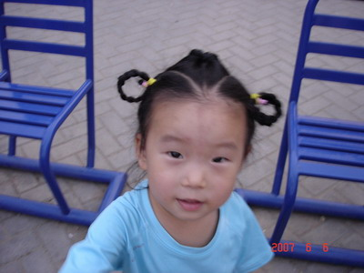
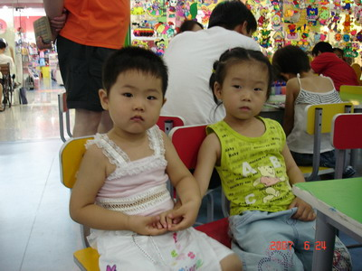

光阴荏苒，曼曼满地乱爬好像还只是昨天的事，转眼她就已经快三岁了。上幼儿园的事成了摆在眼前的一个现实问题。
我们住的小区最大的问题就是教育。小区里没有幼儿园，附近也没有好的小学。
我们的第一个选择是搬回甘家口的物资部大院里，那里有一个公立幼儿园，这两年也已经评上一级一类了，看着环境还不错，收费也便宜，一个月才700多。我和郭嘉有一天专门请假去幼儿园看看。幼儿园的门口贴着一个招生的启事，看门的大婶很冷漠的打量着我们。我们说明来意，她朝那个启事努努嘴：“就在那写着呢，到时候来报名就行了”。再问她一些幼儿园的情况，她爱搭不理的回答着，连我这么愚钝的人都能清清楚楚地听到画外音：“爱来不来，没见正忙着呢嘛”。从头到尾，我和郭嘉连幼儿园的门也没进去。之前一些邻居也和我们说过觉得这个幼儿园不好，但我们一直想自己来了解一下。这个幼儿园给我们的印象就像那些老的国营单位一样，傲慢而腐朽，管理不善，毫无市场竞争意识，凭着自己是公立园收费低等优势，店大欺客。而且，要搬家也有诸多不便，于是这个选择直接就被pass掉了。
我们住的小区附近有一些幼儿园，其中公立的有明天，私立的有21世纪、高娃、灵童。但是这些幼儿园都有一定的距离，走路太远，必须骑车或开车接送。我和郭嘉都不太可能每天迟到早退，让阿姨骑自行车我们又不放心，阿姨自己也觉得车技不好不太敢。特别是郭嘉有一天骑车在田村路上亲眼看见一个小女孩坐在她妈妈的自行车后座上，被一辆大车挂住书包带了下来，促使我们决定绝不能用自行车接送孩子。这样，选择就只剩两个了：高娃和灵童，因为这两个幼儿园在小区门口有班车。
高娃名气很大，我有个朋友的孩子在那里上的，她觉得很不错。我们去的那天其实感觉还是挺好的，五层的教学楼，有一小半全部都是琴房，大大的操场，很漂亮的泳池。接待的老师很热情，还带着我们在教学楼里随意走走看看。高娃最好的地方就在于它有10种特色课程，包括最有名的钢琴，还有国画、舞蹈、轮滑、架子鼓等等。这些课程都不另外收费，所有入园的小朋友可以在这些课程中自由选择，如果选钢琴就可以享受每天半小时的一对一教学。但是高娃实在太大了，就像一个小学一样。我们去的时候正是户外活动时间，操场上满满的都是孩子，一瞥眼，正见一个大孩子一脚把一个小不点从滑梯上踹了下来。曼曼还不到三岁，在这儿还不是任人欺负？而且高娃的特色课程基本上都要等孩子快四岁才能学，不适合太小的孩子。从高娃走的时候，我们觉得这个幼儿园等曼曼大点了可以考虑。当时高娃的收费是日托1700/月，全托1900/月，必须年缴。按照包含的内容来说，其实这个收费还是比较合理的。
最后，我们去考察了灵童。这是一个06年新开的幼儿园，孩子都是附近小区的。幼儿园的环境一般，活动场地很小，但是距离我们小区很近，比起高娃来，孩子坐班车的时间也可以缩短。因为开的时间不长，幼儿园总共才6、70个孩子，每个班里大概20个孩子，还有4、5个老师，老师的比例很高。一个小小的幼儿园，刚刚开办，各方面都很积极向上，而且孩子在这里应该可以得到比较好的照顾。最后，我们决定就让曼曼上灵童了。
在正式入园之前，我带曼曼去听过一次公开课，曼曼很喜欢幼儿园的小桌子、小椅子，很舍不得离开这个有很多小朋友的地方。07年6月，刚刚过完六一，2岁8个月的曼曼正式开始了她的幼儿园生活。入园的第一天是爸爸、妈妈和阿姨三个人去送的。曼曼拉着我们的手，很高兴的走进了幼儿园的大门，很高兴的走进班里，坐在一个小椅子上。可是我们要走的时候她不干了，怎么也不愿意和我说再见，抱着我的脖子不让我走。我只好硬生生的把她交到老师的手上，老师抱着她，她开始很大声地哭起来，我们走出幼儿园的时候还可以看见她趴在老师的肩膀上哭。我们一步三回头，非常的于心不忍。但是想到还有一个充满竞争的、残酷而复杂的社会等在她的面前，还有无数的挑战和委屈她必须承受，眼前的这点磨练又算得了什么呢？于是，我和郭嘉很安静的分开，各自去上班。
中午给幼儿园打电话，老师告诉我们曼曼只是在我们走的时候哭了几分钟，然后一天都很乖，很安静，但是老师对她说的话她都非常明白，老师还问我：“是不是以前上过亲子班，怎么表现这么好呢？”甚至午饭也是小家伙自己吃的，吃的好极了，而曼曼在家从不自己吃饭。这消息真令我欣慰，也令我诧异。每个孩子身上，都会有最亲爱的人也看不到的潜力吧。
下午说好郭嘉开车，先过来接我，然后一起去接曼曼。然而郭嘉一路堵车，中间又走错了一个路口，从东二环赶到西三环我的单位已经五点半了，然后再飞驰到曼曼的幼儿园已经6点了。我在路边心急火燎的等着郭嘉的车，想到孩子上幼儿园的第一天，别的孩子早早的都被接走了，她一个人在幼儿园里渴望着爸爸妈妈的身影，想得我不停的掉眼泪。一上车我就和郭嘉吵了一架，怨他怎么不早些出来，不停的哭。郭嘉心里本也着急，又堵了一个小时的车，正窝着一肚子火呢，忍不住几脚油门一踩，在路上开得飞快，十分危险。要是在平时我早就告诫他开慢些了，可是当时我就是赌气，一言不发。事后他告诉我，有好几次他恨不得就冲着前面的车撞过去。所幸一路没出什么事。赶到幼儿园，就剩曼曼一个小朋友了，几个老师在陪她玩呢。看见我们，曼曼很高兴的走过来。我对老师道歉说来的太晚了，老师说曼曼可乖了，虽然就剩她一个小朋友在这里等，她还安慰老师说：“没关系，我爸爸妈妈马上就会来接我的。”我紧紧地抱着曼曼，眼眶忍不住又湿润了。
回到家中，郭嘉生我的气，不和我说话；我也很后悔，主动道歉，过了两天两个人又和好如初。这是有曼曼以来我们吵得最厉害的一次了。曼曼很成功的度过了她在幼儿园第一天的生活，可是她的爸爸妈妈却没有经受住考验。这件事让我自省是否因了对曼曼关心过切，而忽略了对老公的关心和恩爱；又或者有曼曼以来，我们的生活过度以曼曼为中心，自己的个性都受到了忽视和压抑，才会在这一刻变得如此任性。而我们的幸福是多么的脆弱，在还拥有它的时候更加值得我们去珍惜。
曼曼在第一周的四天里，每天早上我和她再见的时候，她都会难过的哭几分钟，然后就会很乖的在幼儿园里度过她的一天。她总是说喜欢去幼儿园，我问她为什么早上要哭呢，她告诉我她不想看见妈妈和她再见。班主任范老师特别喜欢她，第一天给她录了很多录像，有吃饭的、喝水的、睡午觉的、在外面玩的；还有一个年轻的老师喜欢曼曼的长头发，每天都会给她编特别复杂的小辫，让曼曼成了小区里的风景，走到哪都有人问我小辫是怎么编的。而且，从第二周开始，曼曼开始坐班车了。因为和小区内的好几个小朋友一起上班车，曼曼此后去幼儿园就再也没有哭过了。曼曼就这样很顺利的开始了她的幼儿园生活。

老师给曼曼扎的小辫
曼曼在幼儿园里是一个安静乖巧的孩子，不太爱说话，但是很聪明，很听老师的话。我们欣喜地看到她很喜欢每天去上幼儿园，又有些担心的听到老师说孩子的性格有些内向。有一次，老师告诉我们在幼儿园里玩“拔萝卜”的游戏，曼曼主动举手要求扮演小黄狗，演得可好了。小小的一件事，却让我们倍感欣喜，因为我们看到曼曼在幼儿园里真是渐渐的长大了。

曼曼和嘟嘟在一起